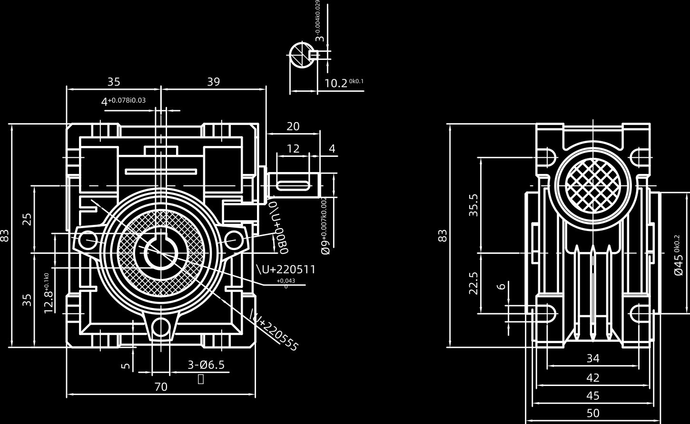

Published October 20, 2026 · SMK Transmission
Quick answer: The supplied RV25 drawing shows a 70 mm housing width, 83 mm overall height, 50 mm overall depth, Ø9 mm input shaft and three indicated Ø6.5 mm mounting holes. Use it as a preliminary reference only; verify the approved drawing and configuration before ordering or making a mounting bracket.

RV25 Main Dimensions
| Parameter | Dimension |
|---|---|
| Housing width | 70 mm |
| Overall housing height | 83 mm |
| Overall depth | 50 mm |
| Housing body depth | 45 mm |
| Mounting width reference | 42 mm |
| Input shaft extension | 20 mm |
| Input shaft diameter | Ø9 mm |
| Input shaft keyway | 12 mm long × 3 mm wide |
| Indicated mounting holes | 3 × Ø6.5 mm |
Input Shaft and Mounting Checks
The drawing shows a Ø9 mm input shaft with a 20 mm extension and a 12 mm by 3 mm keyway. Check these details when selecting a coupling, pulley or drive component. For installation, confirm the mounting-hole positions, shaft alignment, clearance, mounting orientation and access for guards or servicing.
RV25 Selection and Replacement
Model names alone do not guarantee dimensional interchangeability between manufacturers. Before replacing an existing reducer, compare the input and output interfaces, ratio, housing clearance, required torque, motor speed, operating hours and shock load.
For preliminary speed selection, output speed equals motor input speed divided by the reduction ratio. A 1,400 rpm motor with a 20:1 ratio produces a theoretical output speed of 70 rpm. Actual speed changes with motor slip and load. Use our gearbox ratio and torque calculator and review the NMRV/RV worm gearbox range.
What to Send for a Replacement Review
- Photo of the existing gearbox nameplate and installation
- Existing ratio and motor speed
- Input and output shaft dimensions
- Mounting-hole measurements and available clearance
- Required output torque and application details